3.4. Viewing the Analytics Data in Splunk¶
3.4.1. Task 3: Visualize the analytics data in Splunk¶
In your Chrome browser window, open a new tab, and click on the Splunk bookmark to launch the Splunk Web UI
In Splunk, click on the F5 Networks app on the left to launch the F5 Splunk app
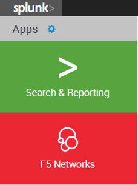
On the Home tab of the F5 Splunk app, change the Time pull-down to Last 60 minutes
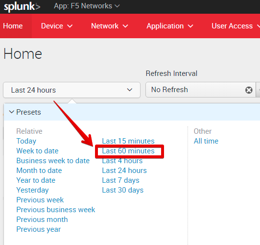
Note that some of the widgets like Non-Responding Hosts or Expiring SSL Certificates may show No results found. This is because there is nothing to report for these metrics in this lab environment.
Scroll down to view other widgets. You may find that your BIG-IP devices are shown under the Unhealthy Devices and/or some applications are shown in the Unhealthy Applications. Let’s investigate:
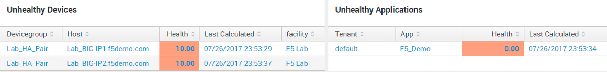
Click on the F5_SJC_Cluster device group under Unhealthy Devices. This will open a new browser tab and take you to the Device Cluster Drilldown dashboard. Here you can see a number of different metrics that contribute to the overall device health score.
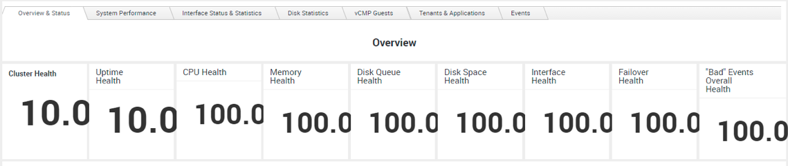
Just under the Overview table showing the scores on different metrics, you can also see a table showing the Device Status, with details on the devices included in the group
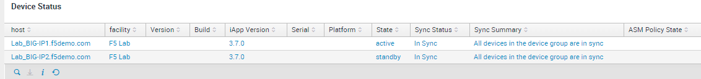
If your devices had any error conditions that generated some Diagnostic information, you could see that in the Diagnostics section.
Now click on the System Performance tab. This will show you details on the CPU and Memory usage of your BIG-IP devices, including a breakdown of processes consuming the most amount of CPU or memory
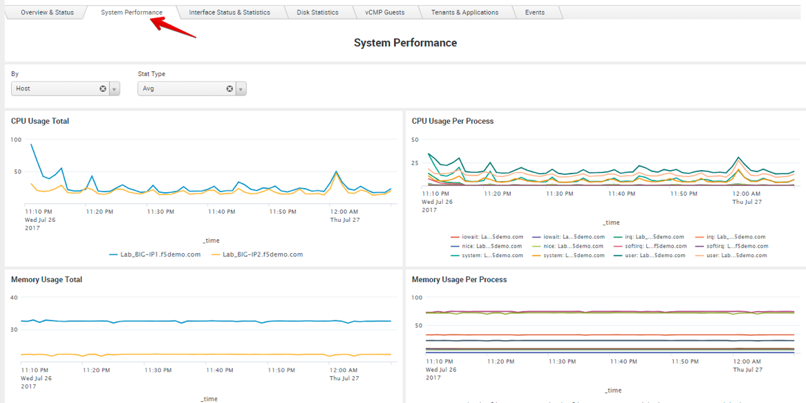
Next, click on Interface Status & Statistics. This will show you detailed Interface and VLAN stats. You can change the options in the pull-down menus to view different information.
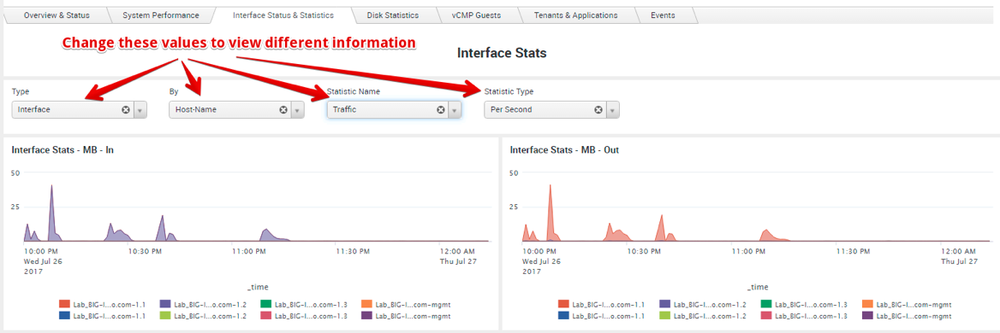
Next, click on the Events tab. This tab shows you Syslog events, with a time-chart of when different kinds of events occurred. If you see any colored squares in the bigip.syslog.pool.statechange syslog table, click on those squares. If you then scroll down, you will see the actual syslog messages from whatever was happening at that time
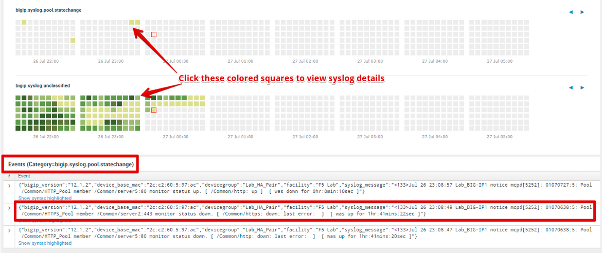
Feel free to explore the other tabs as well to view additional information
Now, let us look at our applications to view more details about them. In the red menu bar at the top, click on Application > Application Dashboard.
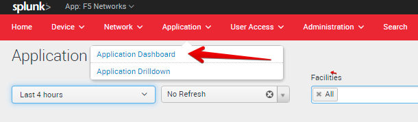
This will show you a listing of all the applications across all your BIG-IPs, based on the application grouping and mappings that you defined in the f5.analytics iApp on the BIG-IP. In our case, we just have a single application. Click on the F5_Demo_App application name to go into the Application Drilldown dashboard
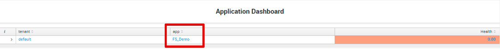
The Application Drilldown dashboard shows you a lot of detailed statistics about your application(s). You can view the various metrics for your application(s) on the Overview tab. To get more details, you can click the link for the View in Application Health Dashboard, which will give you even more detailed metrics and charts that are used in calculating the health scores for the various metrics:
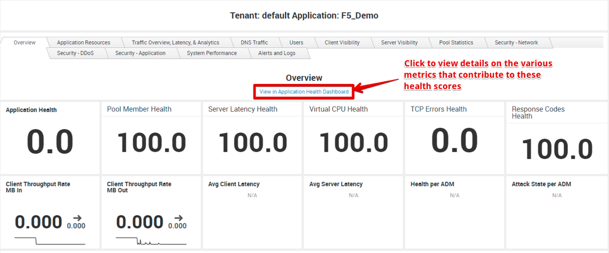
In the Application Health Dashboard that opens up in a new browser tab, you can view the various metrics as well as charts for those metrics that make up the overall Application Health score
Now go back to the browser tab for the Application Drilldown dashboard, and then click on the Application Resources tab. This tab shows you various components that make up your applications, including the facility, virtual servers, pools, pool members, and even iRules. In our case, our F5_Demo application is hosted in a single Facility (F5 Lab), and is made up of 2 Virtual Servers: F5_Demo_HTTP_VS and F5_Demo_HTTPS_VS. Each virtual server has its own pool with their corresponding pool members. You can view details for all these components in the tables below.
Next, click on the Traffic Overview, Latency, & Analytics tab. This tab shows you detailed traffic-related stats, similar to the data available via the AVR charts and reports you saw in Lab 1.
Next, click on the Client Visibility tab. This tab provides a lot of visibility into the traffic between the end-clients and the BIG-IP, including connection stats, throughput information, TCP stats, HTTP information (HTTP requests, HTTP version, HTTP compression info, etc.), SSL information (SSL throughput, SSL protocol info, ciphers, SSL renegotiations, etc.). Similarly, the Server Visibility tab provides similar information for the traffic between the BIG-IPs and the back-end application servers.
The Pool Statistics tab provides details on the various pools and pool members across all the BIG-IPs and each application / virtual server on each BIG-IP.
Feel free to explore other tabs including the System Performance and the Alerts and Logs tabs.
Note
This concludes all the lab steps for the Splunk Integration lab. Feel free to explore other portions of the F5 Splunk app, or try out other settings in the f5.analytics iApp. Note that this lab environment does not include other F5 modules (DNS/GTM, ASM, or APM). However, if you have these other modules enabled on your BIG-IP devices in your own environment, you can view data for these modules as well in the F5 Splunk app.